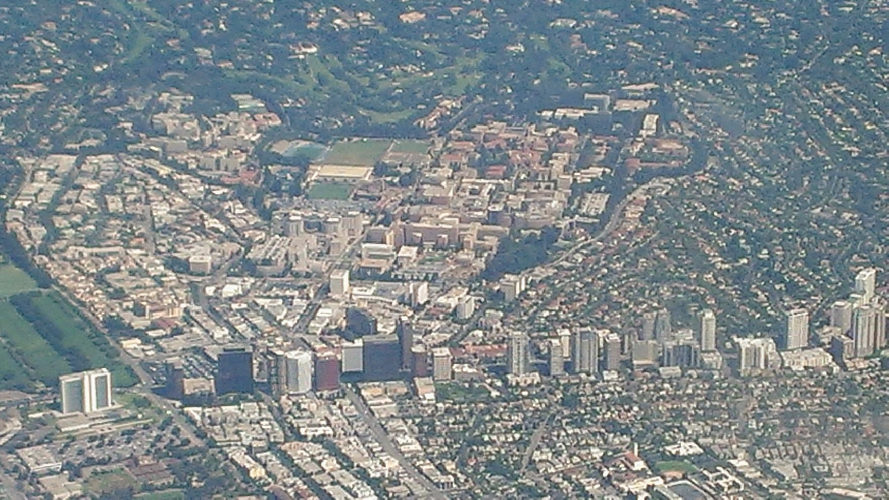
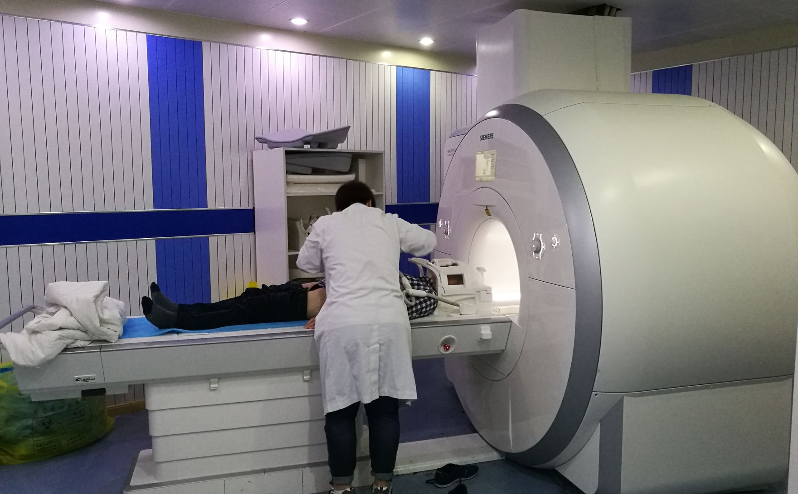

Field A · Medicine
AI × Brain & Neuroscience
The most clinically mature thread. Deep learning reads MRI and PET, and in 2025 the first Alzheimer's blood test was cleared. AI stays decision-support, not autonomous diagnosis.
EEG sleep-spindle

I-9-11 · UCLA × Quantum × Medicine
Nine delegates from Taiwan spend sixty days at UCLA, from July 6 to September 3, 2026, reading the working edge where biomedical engineering meets quantum science.
The program is part of Taiwan's Youth Overseas Dream Fund (青年百億海外圓夢基金計畫), run by the Ministry of Education's Youth Development Administration. It is organized by Asia University with partner TAITA-East, hosted academically by the UCLA Center for Quantum Science & Engineering (CQSE), and co-organized with UCLA Samueli Engineering, the David Geffen School of Medicine, and the UCLA Joe C. Wen School of Nursing.
It is led by Professor Kang L. Wang (王康隆), Distinguished Professor at UCLA and a director of CQSE. The delegation is small by design, nine students of mixed age and discipline, so every person presents, questions, and builds rather than spectates.
Published under

Each theme maps to a waveform. Two are medicine, two are the quantum.
Field A · Medicine
The most clinically mature thread. Deep learning reads MRI and PET, and in 2025 the first Alzheimer's blood test was cleared. AI stays decision-support, not autonomous diagnosis.
EEG sleep-spindle
Field B · Medicine
AI is accelerating pre-clinical work and reaching into Traditional Chinese Medicine. As of 2025, no AI-discovered drug has reached market.
mass-spectrum peaks
Field C · Quantum
The least mature, the most discussed. Today's noisy devices cannot yet model real drug molecules, and serious value sits in the 2030s.
diffraction comb
Field D · Quantum
The convergence is taking shape at top universities: quantum sensing, biomagnetic imaging, instrumentation, materials. Early, and this delegation's frontier.
coherence
Morning is input; afternoon is output. That is the program's rhythm.
A faculty or speaker lecture, a lab visit, or a topic introduction. Take notes, record questions, prepare for the afternoon.
A daily teach-back: three groups present for eight to ten minutes each, then Q&A, explaining the day in their own words. Then project studio.
A traceable learning log for each delegate: three takeaways, one still-confusing question, one next step.
Self-guided city and innovation exploration, rest, and reflection. No formal output.